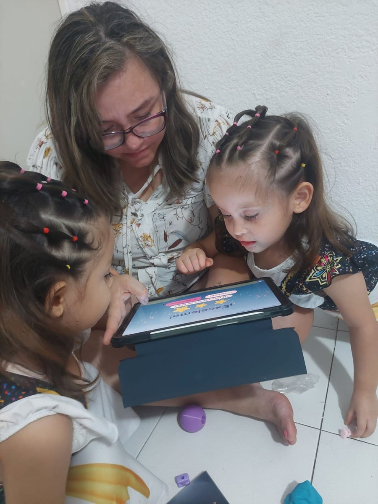
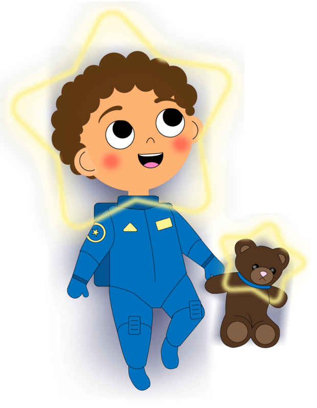

PIN para papás
La app pide el PIN de un adulto para abrir cada sesión. Tu peque no puede usarla solo: siempre juegan juntos.
Milu & Me es un juego híbrido: el juego de verdad pasa en la mesa, con el cajón. La app solo enseña, celebra y se despide. Así la diseñamos para cuidar a tu peque.


La app pide el PIN de un adulto para abrir cada sesión. Tu peque no puede usarla solo: siempre juegan juntos.
Tú eliges de 1 a 60 minutos. Milu recomienda 25. Cambiarlo también pide el PIN.

😴Cuando se acaba el tiempo, los personajes bostezan y se duermen. Quien apaga la app es Milu, no tú.
Solo lo necesario para que el juego funcione.
| Dato | Para qué | Quién lo da |
|---|---|---|
| Nombre o apodo del niño o niña | Que Milu le llame por su nombre | El adulto |
| Correo del adulto | Crear la cuenta, recuperar el PIN y descargar plantillas | El adulto |
| PIN de 4 dígitos | Abrir sesiones y cambiar el temporizador. Se guarda cifrado. | El adulto |
| Progreso del juego | Guardar estrellas, premios y el nivel en que van | La app |
No pedimos fotos, ubicación, micrófono ni contactos. La cámara solo se usa para escanear los QR de las tarjetas y no guarda imágenes.
No. Cada cajón trae su manual impreso y se puede jugar sin pantalla. La app suma videos, música y recompensas.
Puedes recuperarlo desde la app con el correo de tu cuenta.
Abre el video de esa actividad dentro de la app. No lleva a páginas de internet.
Sí. Escríbenos y eliminamos tu cuenta y el progreso del juego. Consulta la política de privacidad.